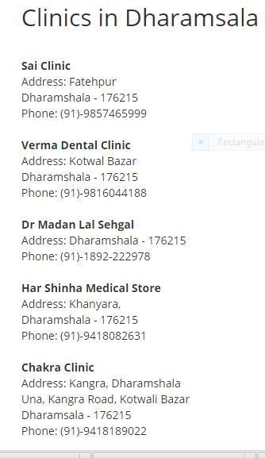

|
|
| A hospital is a health care institution providing patient treatment with specialized staff and equipment. The best-known type of hospital is the general hospital, which has an emergency department. A district hospital typically is the major health care facility in its region, with large numbers of beds for intensive care and long-term care. Specialised hospitals include trauma centres, rehabilitation hospitals, children's hospitals, seniors' (geriatric) hospitals, and hospitals for dealing with specific medical needs such as psychiatric problems (see psychiatric hospital) and certain disease categories. Specialised hospitals can help reduce health care costs compared to general hospitals.
A teaching hospital combines assistance to people with teaching to medical students and nurses. The medical facility smaller than a hospital is generally called a clinic. Hospitals have a range of departments (e.g.: surgery and urgent care) and specialist units such as cardiology. Some hospitals have outpatient departments and some have chronic treatment units. Common support units include a pharmacy, pathology, and radiology.
Hospitals are usually funded by the public sector, by health organisations (for profit or nonprofit), by health insurance companies, or by charities, including direct charitable donations. Historically, hospitals were often founded and funded by religious orders or charitable individuals and leaders.[1]
Today, hospitals are largely staffed by professional physicians, surgeons, and nurses, whereas in the past, this work was usually performed by the founding religious orders or by volunteers. However, there are various Catholic religious orders, such as the Alexians and the Bon Secours Sisters that still focus on hospital ministry today, as well as several other Christian denominations, including the Methodists and Lutherans, which run hospitals.[2] In accordance with the original meaning of the word, hospitals were originally "places of hospitality", and this meaning is still preserved in the names of some institutions such as the Royal Hospital Chelsea, established in 1681 as a retirement and nursing home for veteran soldiers. Zonal Hospital, Dharamshala Located at the foot –hills of the spectacular Dhauladhar mountain range, the town of Dharamshala overlooks the lush green Kangra Valley in the north Indian state of Himachal Pradesh. Renowned for its natural beauty and its ancient Hindu temples, Dharamshala is also world famous as the home of the Dalai Lama and the centre of the Tibetan community in exile. Zonal Hospital Dharamshala originated as District Hospital way back in year 1964 The OPD section was inaugurated in year 1973.Then the Indoor section came into existence in the year 1990. DR RPGMC Medical College also housed in the Building of Zonal Hospital from year 1997 to year 2007. Before the present building of the TMC was constructed. There after the Zonal Hospital came into its current independent existence as Multi specialty Secondary Care Hospital......... The Tibetan Delek Hospital is a Tibetan hospital founded in 1971 and located in Dharamsala in Northern India. It serves the Tibetan residents, and local community in the region, including tourists from around the world.[1] It practices social assistance, mainly using allopathic Western medicine.[2] In 2013, the Kochon Prize, Stop TB Partnership is attributed to the Delek hospital, but China is pressuring ...... |
 |